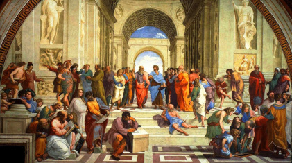

Already before Covid we were aware that the vibe and inspiration of our annual meetings does not carry over to the rest of the year. Having no means of communication except for email, which are written very sporadically, experiencing separation seems inevitable.
Facing strict lockdowns during the pandemic, we moved our annual meeting online. This positive experience of connectedness over the internet sparked the idea to keep this format alive.
Additionally we setup this website. It ought to be a shared creative project and we are in the process of exploring its use cases. We are aware that the motivation to produce content must be first and foremost intrinsic. We are no experts and we are not claiming to. Meaning can be found in inspiring readers, not necessarily in providing conclusive and consistent theories (although you are very welcome to try to 😉) – thereby being in the spirit of the manifesto:
We seek to be inclusive and open to each other but also to people that want to take part. However, affiliation requires participation, which we can try to animate:
If there is one takeaway from our discussion; don't fear html. You can do it, and I will help! If you want to see what a blogpost looks like, "right click" on this page, "view source code" (or similar). The code that is interesting for you is embraced by "<body>" and "</body>". Save the code as .html file in a folder of your liking and play with it (using an "Text-Editor" – i.e. NOT Word). You can always open the .html file in a browser to see how it looks. Observe that the browser displays your code bare naked. You are missing the pictures and the file "stylesheet.css". I can provide you with those if you feel fancy and want to to chisel yourself a monument.